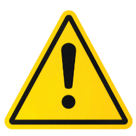
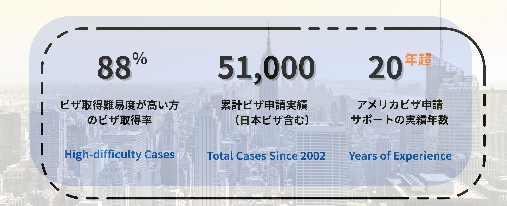

逮捕歴・オーバーステイ・ESTA拒否歴など、難易度の高い案件には特殊な知識と経験が必要です。一般的なビザ申請と同じアプローチでは、 却下は必然です。
些細な記載ミスや、申請書類の組み立て方の甘さが即・不許可につながります。大使館の審査傾向を把握した、緻密な書類戦略が不可欠です。
書類の正確性と同等に重要なのが、領事との面接です。想定問答・回答の一貫性・印象管理まで含めたシミュレーションなしでは、合格は困難です。

却下歴が重なるほど取得難易度は上がります。
再申請の前に、必ず専門家にご相談ください。
不許可の原因を明確にし、リカバリーの可能性をご提示します。
取得が困難な場合も、正直にお伝えします。
受付時間 9:00〜18:00
（土日祝定休）
法的責任がございますので無料
コンサルは行っておりません
